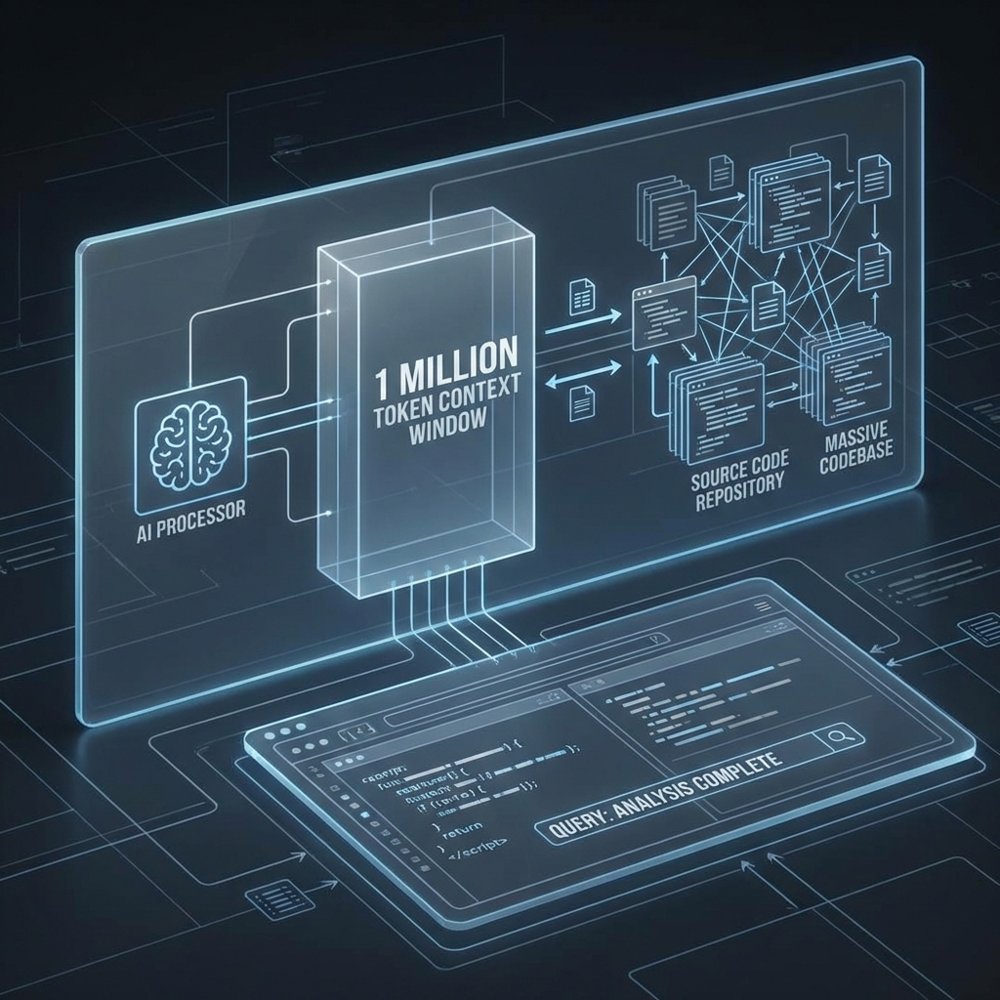

OpenAI just crossed a threshold that changes everything. GPT-5.4 isn't just another language model—it's the first general-purpose AI designed from the ground up to operate computers. Not talk about them. Not write code for them. Actually use them.
Released on March 5, 2026, GPT-5.4 represents a fundamental architectural shift. While previous models excelled at reasoning and conversation, GPT-5.4 adds native computer-use capabilities that turn the model into something closer to a digital employee than a chatbot. It can see your screen, move your mouse, type on your keyboard, and execute complex multi-step workflows across multiple applications.
What Computer Control Actually Means
The marketing around "AI agents" has been heavy on promise and light on delivery. GPT-5.4 changes that equation. The model can:
- Take screenshots and understand what's on your screen
- Generate and execute code using libraries like Playwright
- Issue mouse and keyboard commands based on visual understanding
- Maintain state across lengthy multi-step tasks
- Operate across diverse environments and applications
This isn't demo-ware. OpenAI has built the model specifically for "agentic workflows"—tasks that require planning, execution, error correction, and adaptation over extended sequences of actions. The model thinks less like a conversationalist and more like an operator.
The Million-Token Context Window

Alongside computer control, GPT-5.4 brings a staggering 1 million token context window to the API and Codex. That's roughly 750,000 words of context—enough to load entire codebases, massive document collections, or comprehensive project histories into a single conversation.
The implications for developers are profound. You can now feed GPT-5.4 an entire large-scale application and ask it to understand, debug, refactor, or extend the codebase while maintaining awareness of the full context. No more chunking files or losing track of cross-module dependencies.
Three Sizes for Different Jobs
OpenAI released GPT-5.4 in three variants:
GPT-5.4 - The full model with all capabilities, available via API, Codex, and for ChatGPT Plus/Pro/Enterprise users. This is the flagship for complex agentic tasks.
GPT-5.4 mini - Optimized for high-volume coding and computer use, available to free users through the "Thinking" feature. It sacrifices some capability for speed and cost efficiency.
GPT-5.4 nano - The lightweight option, API-only, designed for automation scenarios requiring maximum speed and minimum cost. Think webhook handlers and simple scripted workflows.
Efficiency Gains
OpenAI claims GPT-5.4 completes tasks with fewer tokens and tool calls than previous models. The company emphasizes that the model is "built for longer, multi-step tasks" and functions "more as an agent that maintains state across numerous actions." For businesses running AI at scale, this efficiency translates directly to cost savings.
Developers can also tune the reasoning_effort parameter from "none" to "xhigh" to balance cost against quality for each request—a granularity of control that enterprise users have been requesting for years.
The Competition Response
GPT-5.4's computer control capabilities put significant pressure on competitors. Anthropic's Claude has dominated the coding assistant space, but GPT-5.4's native computer use and massive context window represent a direct challenge to that dominance. Google DeepMind's Gemini Pro has benchmark advantages, but lacks the agentic execution capabilities OpenAI is now offering.
The race is no longer just about who has the smartest model—it's about who can build the most capable digital worker.
What This Changes
GPT-5.4 moves AI from advisory to operational. Previous models suggested what you should do; GPT-5.4 can actually do it. This shifts the role of AI from assistant to actor—from something that helps you work to something that does the work.
The implications extend across industries. Software development workflows can be increasingly automated. Data entry and form processing become hands-off. Complex multi-system business processes can be delegated to AI agents that operate 24/7 without breaks or errors.
We're entering the era of AI that doesn't just answer questions—it gets things done.